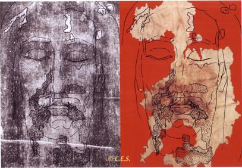
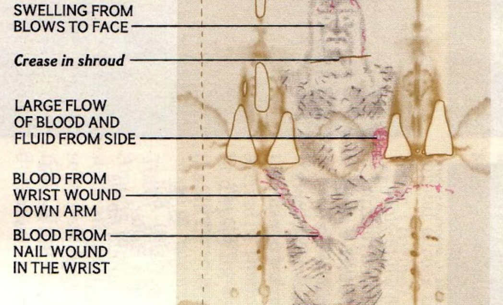
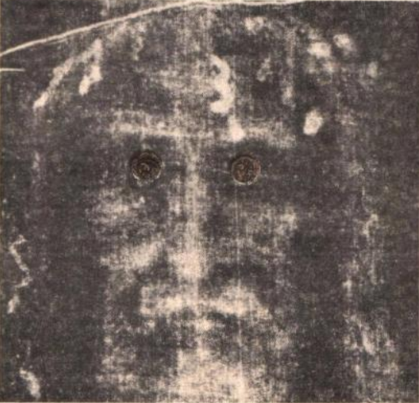

UV atvaizdo formavimas
,,Pasakyk, dukra mano, kad esu pati meilė ir gailestingumas. Kai siela pasitikėdama artinasi prie manęs, pripildau ją tokios malonių gausos, kad ši malonė netelpa jose, bet spinduliuoja kitoms sieloms.”

Dievo Gailestingumo paveikslo ir Turino drobulė sutapimas
(pavažiuokite žemyn norėdami sužinoti daugiau apie abu atvaizdus)


Vienas iš labiausiai išstudijuotų senovinių artefaktų žmonijos istorijoje
Turino drobulė - tai senovinis lininis audinys su nukryžiuoto vyro atvaizdu, kuris buvo išplaktas ir nukankintas dūriais į galvą. Milijonai žmonių visame pasaulyje tiki, kad tai yra Jėzaus Kristaus įkapės.
Skaityti daugiau...Šiuolaikiniai mokslininkai praleido šimtus tūkstančių valandų nuodugniai tyrinėjant ir intensyviai nagrinėjant Turino drobulę. Tinklalapio Shroud.com duomenimis, [1] Turino drobulė, yra vienintelis taip kruopščiai išstudijuotas senovės artefaktas žmonijos istorijoje, todėl šiandien mes apie jį žinome daugiau nei bet kada. Tinklalapis Shroud.com neatsilieka nuo mokslininkų ir rašo apie naujausius jų atradimus, dalinasi tiksliais duomenimis ir leidžia patiems bendrauti su mosklininkais.
Pavažiuokite žemyn norėdami sužinoti daugiau apie Turino drobulę.
7 faktai apie Turino drobulę

3D atvaizdo formavimas

Sutapimas su galvos apdangalu


Atitinka kriminalistinių tyrimų laboratorijų kokybės standartus

Žiedadulkių grūdeliai

Istorinės smulkmenos